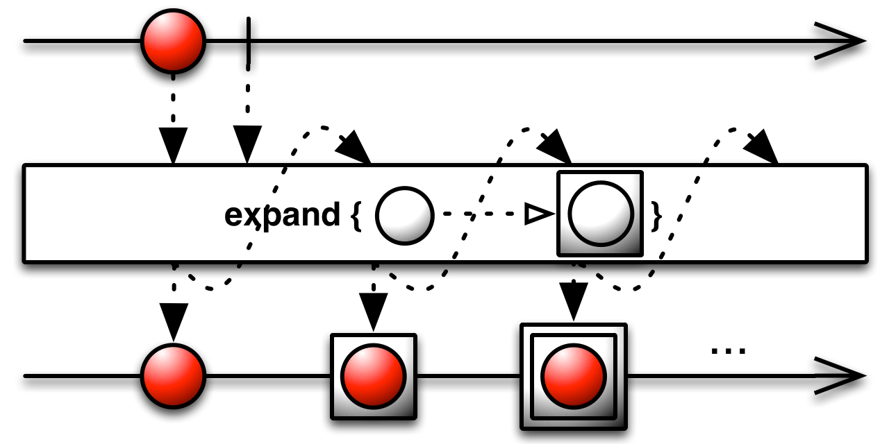
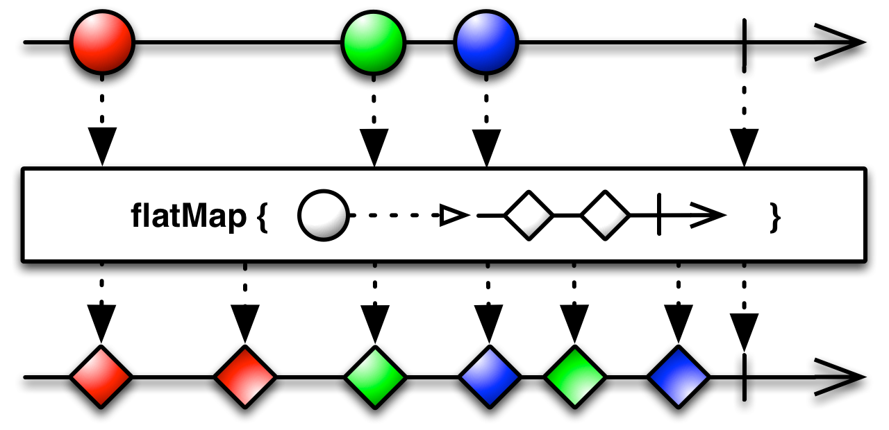
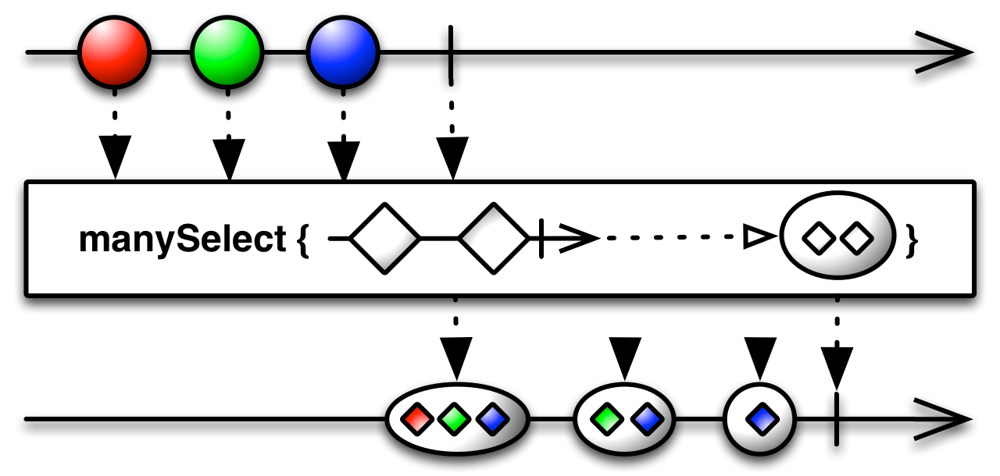

Flat map¶
See also
- Official ReactiveX documentation: FlatMap
-
Observable.expand(selector, scheduler=None)¶ Expands an observable sequence by recursively invoking selector.
- selector – {Function} Selector function to invoke for each produced
- element, resulting in another sequence to which the selector will be invoked recursively again.
- scheduler – {Scheduler} [Optional] Scheduler on which to perform the
- expansion. If not provided, this defaults to the current thread scheduler.
Returns an observable {Observable} sequence containing all the elements produced by the recursive expansion.

-
Observable.flat_map(selector, result_selector=None)¶ One of the Following: Projects each element of an observable sequence to an observable sequence and merges the resulting observable sequences into one observable sequence.
1 - source.select_many(lambda x: Observable.range(0, x))
Or: Projects each element of an observable sequence to an observable sequence, invokes the result selector for the source element and each of the corresponding inner sequence’s elements, and merges the results into one observable sequence.
1 - source.select_many(lambda x: Observable.range(0, x), lambda x, y: x + y)
Or: Projects each element of the source observable sequence to the other observable sequence and merges the resulting observable sequences into one observable sequence.
1 - source.select_many(Observable.from_([1,2,3]))
Keyword arguments: selector – A transform function to apply to each element or an
observable sequence to project each element from the source sequence onto.- result_selector – [Optional] A transform function to apply to each
- element of the intermediate sequence.
Returns an observable sequence whose elements are the result of invoking the one-to-many transform function collectionSelector on each element of the input sequence and then mapping each of those sequence elements and their corresponding source element to a result element.

-
classmethod
Observable.for_in(sources, result_selector)¶ Concatenates the observable sequences obtained by running the specified result selector for each element in source.
- sources – {Array} An array of values to turn into an observable
- sequence.
- result_selector – {Function} A function to apply to each item in the
- sources array to turn it into an observable sequence.
Returns an observable {Observable} sequence from the concatenated observable sequences.
-
Observable.many_select(selector, scheduler=None)¶ Comonadic bind operator. Internally projects a new observable for each value, and it pushes each observable into the user-defined selector function that projects/queries each observable into some result.
Keyword arguments: selector – {Function} A transform function to apply to each element. scheduler – {Object} [Optional] Scheduler used to execute the
operation. If not specified, defaults to the ImmediateScheduler.Returns {Observable} An observable sequence which results from the comonadic bind operation.

-
Observable.select_many(selector, result_selector=None)¶ One of the Following: Projects each element of an observable sequence to an observable sequence and merges the resulting observable sequences into one observable sequence.
1 - source.select_many(lambda x: Observable.range(0, x))
Or: Projects each element of an observable sequence to an observable sequence, invokes the result selector for the source element and each of the corresponding inner sequence’s elements, and merges the results into one observable sequence.
1 - source.select_many(lambda x: Observable.range(0, x), lambda x, y: x + y)
Or: Projects each element of the source observable sequence to the other observable sequence and merges the resulting observable sequences into one observable sequence.
1 - source.select_many(Observable.from_([1,2,3]))
Keyword arguments: selector – A transform function to apply to each element or an
observable sequence to project each element from the source sequence onto.- result_selector – [Optional] A transform function to apply to each
- element of the intermediate sequence.
Returns an observable sequence whose elements are the result of invoking the one-to-many transform function collectionSelector on each element of the input sequence and then mapping each of those sequence elements and their corresponding source element to a result element.
-
Observable.select_switch(selector)¶ Projects each element of an observable sequence into a new sequence of observable sequences by incorporating the element’s index and then transforms an observable sequence of observable sequences into an observable sequence producing values only from the most recent observable sequence.
Keyword arguments: selector – {Function} A transform function to apply to each source
element; the second parameter of the function represents the index of the source element.Returns an observable {Observable} sequence whose elements are the result of invoking the transform function on each element of source producing an Observable of Observable sequences and that at any point in time produces the elements of the most recent inner observable sequence that has been received.